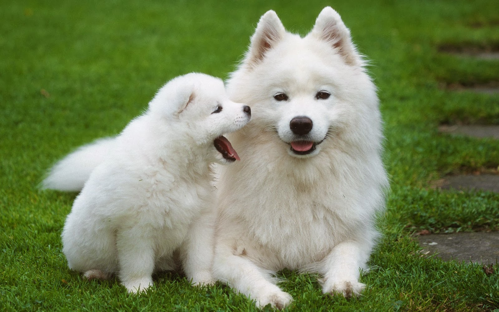
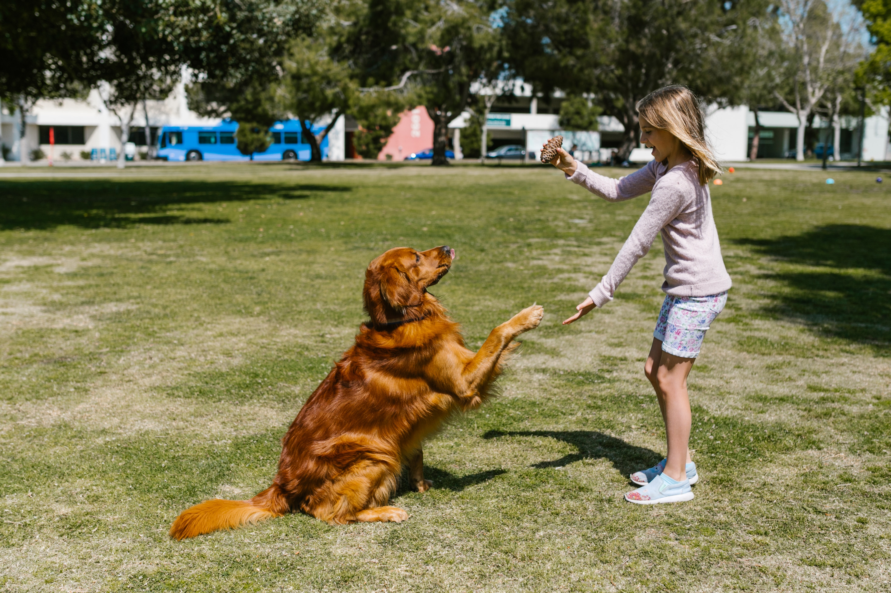

Dog: Man's Friend
What Is It About Dogs?
Dogs are one of the most popular pets in the world. They are known for their loyalty and companionship. Dogs come in many different breeds, each with its own unique characteristics. Some breeds are better suited for certain tasks than others. For example, some breeds are better at hunting or herding than others.
History
Dog is of the Canidae Family and order of carnivora is a domesticated descendant of the wolf. The current wolf is the dog's closest surviving relative. The dog, sometimes known as the domestic dog, is descended from the extinct Pleistocene wolf. Hunter-gatherers tamed dogs as the first species more than 15,000 years ago.
Physical Traits of Dogs
Dogs come in many different breeds, each with its own unique characteristics. Some breeds are better suited for certain tasks than others. Dogs have most of the same muscles, tendons, joints, and ligaments as people. All 4 of the dog’s limbs are maximized for locomotion, from a steady walk to a rapid sprint.n terms of physical features and breeds, dogs are mammals with sharp teeth, an excellent sense of smell, and a fine sense of hearing. Each of its four legs ends in a foot or paw with five toes.
Dog Breed
Though there are hundreds of breeds of dogs, there are few breeds I will like to talk about- Golden Retriever
- German Shepherd
- Bulldog
- Labrador Retriever
Golden Retriever
The Golden Retriever is a popular and beloved dog breed known for its friendly and gentle nature. Here are some Information you should know about them.
Origin
Golden retrievers were developed in Scotland in the late nineteenth century. They were developed to be great retrievers, particularly for retrieving waterfowl on hunting trips.
Appearance
Golden retrievers are medium- to large-sized canines. They are well-muscled and have a strong frame. They have a robust, water-resistant double coat that ranges in color from light to dark gold. Their rich brown eyes are usually pleasant and clever.
Temperament
Golden retrievers are renowned for their outgoing and amiable personalities. They make wonderful family pets since they are friendly and eager to please. Generally speaking, they get along nicely with kids and other animals. Although they are normally not violent, golden retrievers may become guard dogs if they perceive a threat to their family.
Intelligence and Trainability
Golden retrievers are extremely intelligent and eager to learn. They are also very trainable. They are listed as the fourth smartest dog breed in Stanley Coren's "The Intelligence of Dogs." They are incredibly adaptable and trainable as a result. They do well in dog sports like agility and obedience training. They also make great service and therapy dogs.
German Shepherd
 The German Shepherd, also known as the Alsatian, is a highly versatile and intelligent dog breed that originated in Germany. Here are some Information you should know about them.
The German Shepherd, also known as the Alsatian, is a highly versatile and intelligent dog breed that originated in Germany. Here are some Information you should know about them.
Origin
German cavalry commander Captain Max von Stephanitz created the German Shepherd breed in the late 19th century. His goal was to produce a highly intelligent, trainable, and flexible working dog with remarkable herding skills.
Appearance
German Shepherds have a powerful, muscular frame and are large-sized dogs. They have a striking, noble-looking countenance with upright ears and a slightly domed forehead. They have a thick undercoat underneath their dense, straight outer coat. The most popular color combination for the coat is black and tan, though it comes in other hues as well.
Temperament
German Shepherds are renowned for their loyalty, bravery, and instincts for protection. They make excellent working dogs since they are highly clever and trainable. They are frequently employed in a variety of capacities, including herding, search and rescue, police and military duties, and service dog employment. German Shepherds are typically hesitant around new people but dedicated and loving to their families.
Intelligence and Trainability
German Shepherds are regarded as one of the most intelligent dog breeds because of their intelligence and trainability. They are extremely trainable and quick learners. They are excellent candidates for a variety of jobs and activities due to their intelligence and willingness to work. They perform well in tracking, agility, and protective tasks.
German Shepherds and Golden Retrievers are widely popular worldwide, valued for their intelligence, loyalty, and versatility. They are often chosen as family pets, working dogs in various fields, and as companions for active individuals or families.